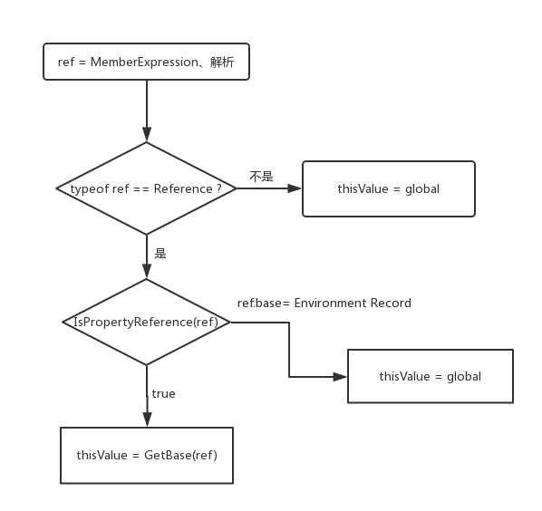

<!DOCTYPE html>
<html>
<head><meta name="generator" content="Hexo 3.8.0">
  <meta charset="utf-8">
  
  <title>深入理解JavaScript系列05-this | LIUXUEWEN&#39;S BLOG</title>
  <meta name="viewport" content="width=device-width, initial-scale=1, maximum-scale=1">
  
    <meta name="keywords" content="LIUXUEWEN,LIUXUEWEN's Blog">
  
  <meta name="description" content="一、前言  回顾之前的知识，我们知道在进入执行上下文阶段会完成变量对象（VO）的创建、作用域链的建立、以及确定 this 的指向。   本节会从 ECMA-262-5 规范去解读 this 的指向，这样去理解是更底层的，所以建议你先了解一下最常见的对 this 的理解，本章节是对其中包含的各种情况更底层的解释。   回顾一下执行上下文：  12345ECStack = &amp;#123;    VO:">
<meta name="keywords" content="前端-JS">
<meta property="og:type" content="article">
<meta property="og:title" content="深入理解JavaScript系列05-this">
<meta property="og:url" content="http://liuxuewen-site.github.io/2019/02/02/JS-deep-05/index.html">
<meta property="og:site_name" content="LIUXUEWEN&#39;S BLOG">
<meta property="og:description" content="一、前言  回顾之前的知识，我们知道在进入执行上下文阶段会完成变量对象（VO）的创建、作用域链的建立、以及确定 this 的指向。   本节会从 ECMA-262-5 规范去解读 this 的指向，这样去理解是更底层的，所以建议你先了解一下最常见的对 this 的理解，本章节是对其中包含的各种情况更底层的解释。   回顾一下执行上下文：  12345ECStack = &amp;#123;    VO:">
<meta property="og:locale" content="default">
<meta property="og:image" content="http://liuxuewen-site.github.io/2019/02/02/JS-deep-05/1.png">
<meta property="og:updated_time" content="2019-02-15T09:06:22.506Z">
<meta name="twitter:card" content="summary">
<meta name="twitter:title" content="深入理解JavaScript系列05-this">
<meta name="twitter:description" content="一、前言  回顾之前的知识，我们知道在进入执行上下文阶段会完成变量对象（VO）的创建、作用域链的建立、以及确定 this 的指向。   本节会从 ECMA-262-5 规范去解读 this 的指向，这样去理解是更底层的，所以建议你先了解一下最常见的对 this 的理解，本章节是对其中包含的各种情况更底层的解释。   回顾一下执行上下文：  12345ECStack = &amp;#123;    VO:">
<meta name="twitter:image" content="http://liuxuewen-site.github.io/2019/02/02/JS-deep-05/1.png">
  
  
    <link rel="icon" href="/favicon.ico">
  
  <link href="//cdn.bootcss.com/font-awesome/4.7.0/css/font-awesome.min.css" rel="stylesheet" type="text/css">
  <link rel="stylesheet" href="/css/style.css">
  <script src="/js/pace.min.js"></script>
  

  
  

</head>
</html>
<body>
  <div id="container">
      <header id="header">
    <div id="banner"></div>
    <div id="header-outer">
        <div id="header-menu" class="header-menu-pos animated">
            <div class="header-menu-container">
                <a href="/" class="left">
                    <span class="site-title">I AM LIUXUEWEN</span>
                </a>
                <nav id="header-menu-nav" class="right">
                    
                    <a href="/">
                        <i class="fa fa-home"></i>
                        <span>Home</span>
                    </a>
                    
                    <a href="/archives">
                        <i class="fa fa-archive"></i>
                        <span>Archives</span>
                    </a>
                    
                    <a href="/about">
                        <i class="fa fa-user"></i>
                        <span>About</span>
                    </a>
                    
                </nav>
                <a class="mobile-header-menu-button">
                    <i class="fa fa-bars"></i>
                </a>
            </div>
        </div>
        <div id="header-row">
            <div id="logo">
                <a href="/">
                    
                </a>
            </div>
            <div class="header-info">
                <div id="header-title">
                    
                    <h2>
                        I AM LIUXUEWEN
                    </h2>
                    
                </div>
                <div id="header-description">
                    
                    <h3>
                        一个 宅不住 的 IT程序员
                    </h3>
                    
                </div>
            </div>
            <nav class="header-nav">
                <div class="social">
                    
                        <a title="Github" target="_blank" href="//github.com/liuxuewen-site">
                            <i class="fa fa-github fa-2x"></i></a>
                    
                        <a title="Weibo" "="">
                            <i class="fa fa-weibo fa-2x"></i></a>
                    
                        <a title="Weixin" "="">
                            <i class="fa fa-weixin fa-2x"></i></a>
                    
                </div>
            </nav>
        </div>
    </div>
</header>
      <div class="outer">
        <section id="main" class="body-wrap"><article id="post-JS-deep-05" class="article article-type-post" itemscope="" itemprop="blogPost">
  <div class="article-inner">
    
      <header class="article-header">
        
  
    <h1 class="post-title" itemprop="name">
      深入理解JavaScript系列05-this
    </h1>
    <div class="post-title-bar">
      <ul>
          
              <li>
                  <i class="fa fa-book"></i>
                  
                      <a href="/categories/前端/">前端</a>
                  
              </li>
          
        <li>
          <i class="fa fa-calendar"></i>  2019-02-02
        </li>
        <li>
          <i class="fa fa-eye"></i>
          <span id="busuanzi_value_page_pv"></span>
        </li>
      </ul>
    </div>
  

          
      </header>
    
    <div class="article-entry post-content" itemprop="articleBody">
      
            
            <h3 id="一、前言"><a href="#一、前言" class="headerlink" title="一、前言"></a>一、前言</h3><p>  回顾之前的知识，我们知道在进入执行上下文阶段会完成变量对象（VO）的创建、作用域链的建立、以及确定 this 的指向。</p>
<p>  本节会从 ECMA-262-5 规范去解读 this 的指向，这样去理解是更底层的，所以建议你先了解一下最常见的<a href="https://github.com/cbbfcd/all-of-javascript/blob/master/读书笔记/你不知道的JS系列/this.mdown" target="_blank" rel="noopener">对 this 的理解</a>，本章节是对其中包含的各种情况更底层的解释。</p>
<p>  回顾一下执行上下文：<br>  <figure class="highlight bash"><table><tr><td class="gutter"><pre><span class="line">1</span><br><span class="line">2</span><br><span class="line">3</span><br><span class="line">4</span><br><span class="line">5</span><br></pre></td><td class="code"><pre><span class="line">ECStack = &#123;</span><br><span class="line">    VO: &#123;...&#125;,</span><br><span class="line">    Scope: [],</span><br><span class="line">    this: ...</span><br><span class="line">&#125;</span><br></pre></td></tr></table></figure></p>
<p>  根据前边的知识我们知道：在进入上下文阶段，VO 被初始值填充，函数的 [[scope]] 属性也被创建。在执行上下文阶段，VO|AO 可以被改写，函数的作用域链在这个阶段也可以受到 with 或者 catch 的影响。但是 this 在进入上下文阶段确定之后，在执行上下文阶段也不会改变了。</p>
<p>  前边也提到了一共有 3 种 ECMA 脚本可执行代码，分别是全局代码、函数代码、eval 代码。在控制器转到不同的可执行代码的时候会生成对应的上下文，也就是说 VO 、Scope、this 都与可执行代码类型有着很大的联系，接下来会具体的阐述（eval 就不要用了，这里忽略）。</p>
<h3 id="二、全局代码中的-this"><a href="#二、全局代码中的-this" class="headerlink" title="二、全局代码中的 this"></a>二、全局代码中的 this</h3><p>  这个是最简单的了，全局代码中的上下文之前提到过，其 this 始终指向全局对象：<br>  <figure class="highlight bash"><table><tr><td class="gutter"><pre><span class="line">1</span><br><span class="line">2</span><br><span class="line">3</span><br><span class="line">4</span><br><span class="line">5</span><br></pre></td><td class="code"><pre><span class="line">globalEC = &#123;</span><br><span class="line">    VO: global object,</span><br><span class="line">    Scope: [ globalEC.VO ],</span><br><span class="line">    this: global object</span><br><span class="line">&#125;</span><br></pre></td></tr></table></figure></p>
<p>  既然 this 在全局代码中始终指向全局对象:<br>  <figure class="highlight bash"><table><tr><td class="gutter"><pre><span class="line">1</span><br><span class="line">2</span><br><span class="line">3</span><br><span class="line">4</span><br><span class="line">5</span><br><span class="line">6</span><br><span class="line">7</span><br><span class="line">8</span><br></pre></td><td class="code"><pre><span class="line">var a = 10;</span><br><span class="line">console.log( window.a );            // 10</span><br><span class="line"></span><br><span class="line">b = 20;                             // 这里的 b 严格说并不是一个变量，之前有提过。</span><br><span class="line">console.log( window.b );            // 20</span><br><span class="line"></span><br><span class="line">this.c = 50;</span><br><span class="line">console.log( window.c );            // 50</span><br></pre></td></tr></table></figure></p>
<h3 id="三、函数代码中的-this"><a href="#三、函数代码中的-this" class="headerlink" title="三、函数代码中的 this"></a>三、函数代码中的 this</h3><p>  在一篇关于 <a href="https://github.com/cbbfcd/all-of-javascript/blob/master/读书笔记/你不知道的JS系列/this.mdown" target="_blank" rel="noopener">this</a> 的文章，说明了 this 对应的 4 种绑定规则、丢失绑定等情况是多么的复杂，不过这都是前辈们总结出来的规则经验，本文尝试从规范去解读 this 的指向，希望能从另一个角度诠释那篇文章中提到的部分 this 指向的问题。</p>
<p>  首先我们得做一些准备工作，熟悉一些规范中的概念( 重要！)：</p>
  <font size="4" face="黑体"><strong>1、类型（Types）：</strong></font>

<p>  Types are further subclassified into ECMAScript language types and specification types.<br>  简译：类型又再分为 ECMAScript 语言类型和规范类型。</p>
<p>  An ECMAScript language type corresponds to values that are directly manipulated by an ECMAScript programmer using the ECMAScript language. The ECMAScript language types are Undefined, Null, Boolean, String, Number, and Object.<br>  简译：ECMAScript 语言类型就是我们直接用来操作的值对应的类型，包括未定义（Undefined）、空值（Null）、布尔值（Boolean）、字符串（String）、数值（Number）、对象（Object）。</p>
<p>  A specification type corresponds to meta-values that are used within algorithms to describe the semantics of ECMAScript language constructs and ECMAScript language types. The specification types are Reference, List, Completion, Property Descriptor, Property Identifier, Lexical Environment, and Environment Record. Specification type values are specification artefacts that do not necessarily correspond to any specific entity within an ECMAScript implementation. Specification type values may be used to describe intermediate results of ECMAScript expression evaluation but such values cannot be stored as properties of objects or values of ECMAScript language variables.<br>  简译：规范类型是描述 ECMAScript 语言构造与 ECMAScript 语言类型语意的算法所用的元值对应的类型。规范类型包括引用、列表、完结、属性描述式、属性标示、词法环境（Lexical Environment）、环境纪录（Environment Record）。规范类型的值是不一定对应 ECMAScript 实现里任何实体的虚拟对象。规范类型可用来描述 ECMAScript 表式运算的中途结果，但是这些值不能存成对象的变量或是 ECMAScript 语言变量的值。</p>
<p>  语言类型大家肯定都没问题，规范类型有点懵逼。这里大家可以参考 <a href="https://www.zhihu.com/question/31911373/answer/53870311" target="_blank" rel="noopener">尤雨溪在知乎的回答</a>：规范类型也就是只存在于规范里的抽象类型。它们是为了更好地描述语言的底层行为逻辑才存在的，但并不存在于实际的 js 代码中。</p>
<p>  在规范类型中，我们重点关注的是 Reference、LexicalEnvironment、EnvironmentRecord。</p>
  <font size="4" face="黑体"><strong>2、左值表达式：</strong></font>

<p>  MemberExpression：PrimaryExpression FunctionExpression MemberExpression [ Expression ] MemberExpression . IdentifierName new MemberExpression Arguments.</p>
<p>  这里关注 MemberExpression，可以理解为 () 左边的部分。比如：<br>  <figure class="highlight bash"><table><tr><td class="gutter"><pre><span class="line">1</span><br><span class="line">2</span><br><span class="line">3</span><br><span class="line">4</span><br><span class="line">5</span><br><span class="line">6</span><br><span class="line">7</span><br><span class="line">8</span><br><span class="line">9</span><br><span class="line">10</span><br><span class="line">11</span><br><span class="line">12</span><br></pre></td><td class="code"><pre><span class="line"><span class="keyword">function</span> <span class="function"><span class="title">foo</span></span>()&#123;&#125;; </span><br><span class="line">foo();                           // MemberEcpression --&gt; foo</span><br><span class="line"></span><br><span class="line"><span class="keyword">function</span> <span class="function"><span class="title">foo</span></span>()&#123;</span><br><span class="line">    <span class="built_in">return</span> <span class="function"><span class="title">function</span></span>()&#123;&#125;</span><br><span class="line">&#125;;</span><br><span class="line">foo()();                         // MemberEcpression --&gt; foo()</span><br><span class="line"></span><br><span class="line">var foo = &#123;</span><br><span class="line">    bar: <span class="function"><span class="title">function</span></span>()&#123;&#125;</span><br><span class="line">&#125;</span><br><span class="line">foo.bar();                       // MemberEcpression --&gt; foo.bar</span><br></pre></td></tr></table></figure></p>
  <font size="4" face="黑体"><strong>3、Reference type（引用类型）：</strong></font>

<p>  Reference type，引用类型，这是确定 this 指向最重要的依据之一。</p>
<p>  The Reference type is used to explain the behaviour of such operators as delete, typeof, and the assignment operators……<br>  简译：引用类型 (Reference type) 用来说明 delete，typeof，赋值运算符这些运算符的行为。</p>
<p>  A Reference is a resolved name binding. A Reference consists of three components, the base value, the referenced name and the Boolean valued strict reference flag. The base value is either undefined, an Object, a Boolean, a String, a Number, or an environment record (10.2.1). A base value of undefined indicates that the reference could not be resolved to a binding. The referenced name is a String.<br>  简译：一个引用 (Reference) 是个已解决的命名绑定。一个引用由三部分组成， 基值（base），引用名称（referenced name）和严格引用布尔值（strict reference）标志。基值是 undefined, 一个 Object, 一个 Boolean, 一个 String, 一个 Number, 一个 environment record 中的任意一个。基值是 undefined 表示此引用可以不解决一个绑定。引用名称是一个字符串。</p>
<p>  这里明白 Reference 组成就好：<br>  1）base，引用指向的原值，可能是 undefined、Object、Boolean、String、Number、EnvironmentRecord。<br>  2）referenced name，引用的名称，字符串。<br>  3）strict reference，是否是严格模式，布尔值。</p>
<p>  举个例子：<br>  <figure class="highlight bash"><table><tr><td class="gutter"><pre><span class="line">1</span><br><span class="line">2</span><br><span class="line">3</span><br><span class="line">4</span><br><span class="line">5</span><br><span class="line">6</span><br><span class="line">7</span><br><span class="line">8</span><br><span class="line">9</span><br><span class="line">10</span><br><span class="line">11</span><br></pre></td><td class="code"><pre><span class="line"><span class="keyword">function</span> <span class="function"><span class="title">foo</span></span>()&#123;</span><br><span class="line">    console.log( this )</span><br><span class="line">&#125;;</span><br><span class="line">foo();</span><br><span class="line"></span><br><span class="line">// 对应的 Reference</span><br><span class="line">fooReference = &#123;</span><br><span class="line">    base: EnvironmentRecord,</span><br><span class="line">    referencedName: <span class="string">'foo'</span>,</span><br><span class="line">    strictReference: <span class="literal">false</span></span><br><span class="line">&#125;;</span><br></pre></td></tr></table></figure></p>
<p>  规范中还提到了一些操作 Reference 中组件的方法，列出几个我们需要的：<br>  1）GetBase(V) 返回引用值 V 的基值组件(返回 fooReference.base)。<br>  2）HasPrimitiveBase(V) 如果基值是 Boolean, String, Number，那么返回 true。<br>  3）IsPropertyReference(V) 如果基值是个对象或 HasPrimitiveBase(V) 是 true，那么返回 true，否则返回 false。<br>  4）IsUnresolvableReference(V) 如果基值是 undefined 那么返回 true，否则返回 false。<br>  5）GetValue(V) 返回一个具体的值，不再是 Reference 类型。</p>
<p>  其中，GetBase(V) 返回的就是你想知道的 this 指向。另外 GetValue(V) 是一个很重要的方法，单独说一下：<br>  <figure class="highlight bash"><table><tr><td class="gutter"><pre><span class="line">1</span><br><span class="line">2</span><br><span class="line">3</span><br><span class="line">4</span><br><span class="line">5</span><br><span class="line">6</span><br><span class="line">7</span><br><span class="line">8</span><br><span class="line">9</span><br><span class="line">10</span><br><span class="line">11</span><br><span class="line">12</span><br><span class="line">13</span><br><span class="line">14</span><br><span class="line">15</span><br><span class="line">16</span><br><span class="line">17</span><br><span class="line">18</span><br><span class="line">19</span><br><span class="line">20</span><br><span class="line">21</span><br><span class="line">22</span><br><span class="line">23</span><br><span class="line">24</span><br><span class="line">25</span><br><span class="line">26</span><br><span class="line">27</span><br><span class="line">28</span><br><span class="line">29</span><br><span class="line">30</span><br><span class="line">31</span><br><span class="line">32</span><br><span class="line">33</span><br><span class="line">34</span><br><span class="line">35</span><br><span class="line">36</span><br></pre></td><td class="code"><pre><span class="line">// 根据规范模拟实现一下 GetValue(V)</span><br><span class="line"><span class="keyword">function</span> GetValue(V)&#123;</span><br><span class="line">    </span><br><span class="line">    // 1. If Type(V) is not Reference, <span class="built_in">return</span> V.</span><br><span class="line">    <span class="keyword">if</span>(Type(V) != Reference)&#123;</span><br><span class="line">        <span class="built_in">return</span> V;</span><br><span class="line">    &#125;</span><br><span class="line"></span><br><span class="line">    // 2. Let base be the result of calling GetBase(V).</span><br><span class="line">    var base = GetBase(V);</span><br><span class="line"></span><br><span class="line">    // 3. If IsUnresolvableReference(V), throw a ReferenceError exception</span><br><span class="line">    <span class="keyword">if</span>(IsUnresolvableReference(V))&#123;</span><br><span class="line">        throw new ReferenceError;</span><br><span class="line">    &#125;</span><br><span class="line"></span><br><span class="line">    // 4. If IsPropertyReference(V), <span class="keyword">then</span></span><br><span class="line">    // a. If HasPrimitiveBase(V) is <span class="literal">false</span>, <span class="keyword">then</span> <span class="built_in">let</span> get be the [[Get]] internal method of base, </span><br><span class="line">    //    otherwise <span class="built_in">let</span> get be the special [[Get]] internal method defined below</span><br><span class="line">    // b. Return the result of calling the get internal method using base as its this value, </span><br><span class="line">    //    and passing GetReferencedName(V) <span class="keyword">for</span> the argument.</span><br><span class="line">    <span class="keyword">if</span>(IsPropertyReference(V))&#123;</span><br><span class="line">        var get;</span><br><span class="line">        <span class="keyword">if</span>(!HasPrimitiveBase(V))&#123;</span><br><span class="line">            get = base.[[Get]];</span><br><span class="line">        &#125;<span class="keyword">else</span>&#123;</span><br><span class="line">            get = [[specialGet]]</span><br><span class="line">        &#125;</span><br><span class="line">        <span class="built_in">return</span> base.get(GetReferencedName(V));</span><br><span class="line">    &#125;</span><br><span class="line"></span><br><span class="line">    // 5. Else, base must be an environment record</span><br><span class="line">    //    Return the result of calling the GetBindingValue (see 10.2.1) concrete method of </span><br><span class="line">    //    base passing GetReferencedName(V) and IsStrictReference(V) as arguments</span><br><span class="line">    <span class="built_in">return</span>  GetBindingValue(GetReferencedName(V), IsStrictReference(V));</span><br><span class="line">&#125;;</span><br></pre></td></tr></table></figure></p>
<p>  按照规范，伪实现一次代码，能够加深理解。GetValue() 能够从引用类型中得到一个对象真正的值，这也是一个很重要的点，记住，调用了 GetValue() 返回的就不再是一个 Reference 类型了，而是一个具体的值。</p>
  <font size="4" face="黑体"><strong>4、ImplicitThisValue：</strong></font>

<p>  Declarative Environment Records always return undefined as their ImplicitThisValue. Return undefined.<br>  简译：声明式环境记录项永远将 undefined 作为其 ImplicitThisValue 返回。</p>
<p>  也就是说如果 Reference 中的 base 是一个 Environment Records，那么 GetBase() 的结果将会是执行 ImplicitThisValue 的结果，也就是得到一个 undefined。最终也就是 this 指向 undefined。</p>
<p>  那么什么情况下会得到一个 Reference 中的 base 是一个 Environment Records 的情况呢？下面这种就是最简单的情况，看过这篇关于 <a href="https://github.com/cbbfcd/all-of-javascript/blob/master/读书笔记/你不知道的JS系列/this.mdown" target="_blank" rel="noopener">this</a> 的文章，你可能立即就会知道是函数独立调用，采用默认绑定规则，所以 this 绑定到全局对象。<br>  <figure class="highlight bash"><table><tr><td class="gutter"><pre><span class="line">1</span><br><span class="line">2</span><br><span class="line">3</span><br><span class="line">4</span><br><span class="line">5</span><br></pre></td><td class="code"><pre><span class="line"><span class="keyword">function</span> <span class="function"><span class="title">foo</span></span>()&#123;</span><br><span class="line">    alert(this);</span><br><span class="line">&#125;</span><br><span class="line"></span><br><span class="line">foo();</span><br></pre></td></tr></table></figure></p>
<p>  但是从规范上看，过程很复杂。</p>
<p>  首先第一步是进行标识符解析。所谓标识符，在这里就是 foo，标识符可理解为变量名，函数名，函数参数名和全局对象中未识别的属性名。获得其引用类型(这一点在讲作用域链的时候提过)：解析的过程大概分为，<a href="http://es5.github.io/#x11.1.2" target="_blank" rel="noopener">标识符引用</a> -&gt; <a href="http://es5.github.io/#x10.3.1" target="_blank" rel="noopener">标识符解析</a>。看下面的语句：</p>
<p>  Identifier resolution is the process of determining the binding of an Identifier using the LexicalEnvironment of the running execution context…<br>  简译：标识符解析是使用正在运行的执行上下文的词法环境来确定标识符的绑定的过程…</p>
<p>  Let env be the running execution context’s LexicalEnvironment.<br>  简译：let env = LexicalEnvironment</p>
<p>  Return the result of calling GetIdentifierReference function passing env, Identifier, and strict as arguments.<br>  简译：返回值是调用 GetIdentifierReference(env, Identifier, strict) 的结果。</p>
<p>  所以，我们再看看 GetIdentifierReference 方法：<br>  <figure class="highlight bash"><table><tr><td class="gutter"><pre><span class="line">1</span><br><span class="line">2</span><br><span class="line">3</span><br><span class="line">4</span><br><span class="line">5</span><br><span class="line">6</span><br><span class="line">7</span><br><span class="line">8</span><br><span class="line">9</span><br><span class="line">10</span><br><span class="line">11</span><br><span class="line">12</span><br><span class="line">13</span><br><span class="line">14</span><br><span class="line">15</span><br><span class="line">16</span><br><span class="line">17</span><br><span class="line">18</span><br><span class="line">19</span><br><span class="line">20</span><br><span class="line">21</span><br><span class="line">22</span><br><span class="line">23</span><br><span class="line">24</span><br><span class="line">25</span><br><span class="line">26</span><br><span class="line">27</span><br><span class="line">28</span><br><span class="line">29</span><br><span class="line">30</span><br><span class="line">31</span><br><span class="line">32</span><br><span class="line">33</span><br><span class="line">34</span><br><span class="line">35</span><br><span class="line">36</span><br><span class="line">37</span><br><span class="line">38</span><br><span class="line">39</span><br></pre></td><td class="code"><pre><span class="line"><span class="keyword">function</span> GetIdentifierReference(lex, name, strict)&#123;</span><br><span class="line">    // 我们同样模拟实现</span><br><span class="line"></span><br><span class="line">    // 1. If lex is the value null, <span class="keyword">then</span> Return a value of <span class="built_in">type</span> Reference whose base value is undefined, </span><br><span class="line">    //    whose referenced name is name, and whose strict mode flag is strict.</span><br><span class="line">    <span class="keyword">if</span>(lex == null)&#123;</span><br><span class="line">        <span class="built_in">return</span> Reference(base = undefined, name = name, strict = strict);</span><br><span class="line">    &#125;</span><br><span class="line"></span><br><span class="line">    // 2. Let envRec be lex’s environment records.</span><br><span class="line">    <span class="built_in">let</span> envRec = lex.[[ environment records ]];</span><br><span class="line"></span><br><span class="line">    // 3. Let exists be the result of calling the HasBinding(N) concrete method of </span><br><span class="line">    //    envRec passing name as the argument N.</span><br><span class="line">    <span class="built_in">let</span> exists = envRec.HasBinding(N=name)</span><br><span class="line"></span><br><span class="line">    // 4. If exists is <span class="literal">true</span>, <span class="keyword">then</span> Return a value of <span class="built_in">type</span> Reference whose base value is envRec,</span><br><span class="line">    //    whose referenced name is name, and whose strict mode flag is strict.</span><br><span class="line">    <span class="keyword">if</span>(exists)&#123;</span><br><span class="line">        // 返回一个 Refernce 对象，base 为 Environment Record</span><br><span class="line">        <span class="built_in">return</span> Reference(base = envRec, name = name, strict = strict);</span><br><span class="line">    &#125;</span><br><span class="line">    // 所以这里的 base 是一个 Environment Record</span><br><span class="line">    // 所以 fooReference.base = Environment Record</span><br><span class="line"></span><br><span class="line">    // 5. Else </span><br><span class="line">    // a. Let outer be the value of lex’s outer environment reference,</span><br><span class="line">    // b. Return the result of calling GetIdentifierReference passing outer, name, and strict as arguments.</span><br><span class="line"></span><br><span class="line">    // outer environment reference 下面简写为 [[outer]]</span><br><span class="line">    // 参见:http://es5.github.io/<span class="comment">#x10.2</span></span><br><span class="line">    // 大致有两个重点：</span><br><span class="line">    // 1. Lexical Environment = Environment Record + outer Lexical Environment</span><br><span class="line">    //    就是说词法环境等于环境记录项+可能为空的外部词法环境</span><br><span class="line">    // 2. outer environment reference( 外部词法环境引用 ) 表示词法环境的逻辑嵌套关系模型。</span><br><span class="line">    //  外部词法环境引用是逻辑上包含内部词法环境的词法环境。</span><br><span class="line">    <span class="built_in">let</span> outer = lex.[[outer]];</span><br><span class="line">    <span class="built_in">return</span> GetIdentifierReference(outer, name, strict);</span><br><span class="line">&#125;;</span><br></pre></td></tr></table></figure></p>
<p>  可见，标识符解析肯定会返回一个 Reference 类型，而且不出意外的话会把其 LexicalEnvironment 中的 Environment Records 作为 baseValue。一时不理解没关系，先记住咱们上面的 foo() 经历了词法解析后得到：<br>  <figure class="highlight bash"><table><tr><td class="gutter"><pre><span class="line">1</span><br><span class="line">2</span><br><span class="line">3</span><br><span class="line">4</span><br><span class="line">5</span><br></pre></td><td class="code"><pre><span class="line">fooReference = &#123;</span><br><span class="line">    base: Environment Records,</span><br><span class="line">    referencedName: <span class="string">'foo'</span>,</span><br><span class="line">    strictReference: <span class="literal">false</span></span><br><span class="line">&#125;;</span><br></pre></td></tr></table></figure></p>
  <font size="4" face="黑体"><strong>5、函数调用：</strong></font>

<p>  最重要的当然是理解在函数调用过程中，如何一步一步确定 this 指向的。这个过程有很多前面提到的概念，如果不清楚的回过头看看即可。我们把函数调用规范中与 this 有关的剥离出来：</p>
<p>  Let ref be the result of evaluating MemberExpression.</p>
<p>  If Type(ref) is Reference, then： a. If IsPropertyReference(ref) is true ,Let thisValue be GetBase(ref). b. Else, the base of ref is an Environment Record Let thisValue be the result of calling the ImplicitThisValue concrete method of GetBase(ref).</p>
<p>  Else, Type(ref) is not Reference, Let thisValue be undefined.</p>
<p>  上面的流程大致就是这样：先通过 MemberExpression 得到一个 ref。判断这个 ref 的类型是不是 Reference，如果不是，this 指向 undefined，如果是，就再判断 IsPropertyReference(ref) 的结果，如果为 true，thisValue = GetBase(ref)，否则 base = Environment Record，thisValue = ImplicitThisValue(ref) = undefined。</p>
<p>  再画个图：</p>
<p>  </p>
<h3 id="四、实战分析"><a href="#四、实战分析" class="headerlink" title="四、实战分析"></a>四、实战分析</h3><p>  前边铺垫了那么多，一时难以消化是正常的，结合下面给出的 demo，多分析几次，就会发觉其实没那么复杂，如果有记不住的往上翻翻概念。</p>
  <font size="4" face="黑体"><strong>1、demo1：</strong></font>

  <figure class="highlight bash"><table><tr><td class="gutter"><pre><span class="line">1</span><br><span class="line">2</span><br><span class="line">3</span><br><span class="line">4</span><br><span class="line">5</span><br><span class="line">6</span><br><span class="line">7</span><br><span class="line">8</span><br><span class="line">9</span><br><span class="line">10</span><br><span class="line">11</span><br><span class="line">12</span><br><span class="line">13</span><br><span class="line">14</span><br><span class="line">15</span><br><span class="line">16</span><br><span class="line">17</span><br><span class="line">18</span><br><span class="line">19</span><br><span class="line">20</span><br><span class="line">21</span><br><span class="line">22</span><br><span class="line">23</span><br><span class="line">24</span><br><span class="line">25</span><br><span class="line">26</span><br><span class="line">27</span><br><span class="line">28</span><br><span class="line">29</span><br><span class="line">30</span><br><span class="line">31</span><br></pre></td><td class="code"><pre><span class="line"><span class="keyword">function</span> <span class="function"><span class="title">foo</span></span>()&#123;</span><br><span class="line">    alert(this);</span><br><span class="line">&#125;</span><br><span class="line">foo();</span><br><span class="line"></span><br><span class="line">// 其 Refernce</span><br><span class="line">fooReference = &#123;</span><br><span class="line">    base: Environment Records,</span><br><span class="line">    referencedName: <span class="string">'foo'</span>,</span><br><span class="line">    strictReference: <span class="literal">false</span></span><br><span class="line">&#125;</span><br><span class="line"></span><br><span class="line">// 结合上边的流程图分析</span><br><span class="line">// 1. MemberExpression 得到 foo。</span><br><span class="line">// 2. 对 foo 进行标识符解析，调用 GetIdentifierReference 方法，</span><br><span class="line">//    该方法会返回一个 Reference 对象 ref，所以 typeof ref = Reference。</span><br><span class="line">// 3. fooReference.base = Environment Records，所以 thisValue = ImplicitThisValue(ref) 的结果，</span><br><span class="line">//    ImplicitThisValue 总是返回 undefined ，非严格模式下，会 <span class="built_in">set</span> the ThisBinding to the global object。</span><br><span class="line"></span><br><span class="line">// 变化一下，我们都知道原型对象有一个 contrucor 属性指向其构造函数。</span><br><span class="line">console.log(foo === foo.prototype.constructor);     // <span class="literal">true</span></span><br><span class="line"></span><br><span class="line">// 那么，他们应该是一样的函数，this 指向一样吗？</span><br><span class="line">foo.prototype.constructor();                        // foo.prototype</span><br><span class="line"></span><br><span class="line">// 因为（参考 demo2 属性访问）：</span><br><span class="line">fooPrototypeRefernce = &#123;</span><br><span class="line">    base: foo.prototype,</span><br><span class="line">    referencedName: <span class="string">'constructor'</span>,</span><br><span class="line">    strictReference: <span class="literal">false</span></span><br><span class="line">&#125;</span><br></pre></td></tr></table></figure>
  <font size="4" face="黑体"><strong>2、demo2：</strong></font>

<p>  先补充一个规范：Property Accessors，属性访问的规范。所谓属性访问，直白的说就比如 a.b，a[‘b’]。</p>
<p>  规范定义了其返回结果：</p>
<p>  Let baseReference be the result of evaluating MemberExpression.<br>  简译：baseReference 就是解释执行 MemberExpression 的结果，直白的说就是 .左边的，或者说[]左边的</p>
<p>  Let baseValue be GetValue(baseReference).<br>  简译: baseValue = GetValue(baseReference)</p>
<p>  Return a value of type Reference whose base value is baseValue and whose referenced name is propertyNameString, and whose strict mode flag is strict.<br>  最终返回的是一个 Reference 类型。</p>
  <figure class="highlight bash"><table><tr><td class="gutter"><pre><span class="line">1</span><br><span class="line">2</span><br><span class="line">3</span><br><span class="line">4</span><br><span class="line">5</span><br><span class="line">6</span><br><span class="line">7</span><br><span class="line">8</span><br><span class="line">9</span><br><span class="line">10</span><br><span class="line">11</span><br><span class="line">12</span><br><span class="line">13</span><br><span class="line">14</span><br><span class="line">15</span><br><span class="line">16</span><br><span class="line">17</span><br><span class="line">18</span><br><span class="line">19</span><br><span class="line">20</span><br><span class="line">21</span><br><span class="line">22</span><br><span class="line">23</span><br><span class="line">24</span><br><span class="line">25</span><br><span class="line">26</span><br><span class="line">27</span><br><span class="line">28</span><br><span class="line">29</span><br><span class="line">30</span><br></pre></td><td class="code"><pre><span class="line">var foo = &#123;</span><br><span class="line">    bar: <span class="function"><span class="title">function</span></span> () &#123;</span><br><span class="line">        <span class="built_in">return</span> this;</span><br><span class="line">    &#125;</span><br><span class="line">&#125;;</span><br><span class="line">foo.bar();</span><br><span class="line"></span><br><span class="line">// 其 Refernce</span><br><span class="line">fooBarRefernce = &#123;</span><br><span class="line">    base: foo,</span><br><span class="line">    referencedName: <span class="string">'bar'</span>,</span><br><span class="line">    strictReference: <span class="literal">false</span></span><br><span class="line">&#125;</span><br><span class="line"></span><br><span class="line">// 1. MemberExpression 得到 foo.bar</span><br><span class="line">// 2. foo.bar 是一个属性访问，根据上边说的，baseValue = GetValue( baseReference )，</span><br><span class="line">//    而 baseReference 就是 foo，所以得出 baseValue = foo</span><br><span class="line">// 3. 根据上边规范第8点，返回的是 Reference，而且 base 是一个对象</span><br><span class="line">// 4. 判断 IsPropertyReference，结果为 <span class="literal">true</span>，所以 thisValue = GetBase(fooBarRefernce) = foo。</span><br><span class="line"></span><br><span class="line">// 变化一下</span><br><span class="line">var <span class="built_in">test</span> = foo.bar;</span><br><span class="line"><span class="built_in">test</span>();                         // global</span><br><span class="line"></span><br><span class="line">// 这个时候，标识符为 <span class="built_in">test</span>，其 Reference</span><br><span class="line">testReference =　&#123;</span><br><span class="line">    base: Environment Records,</span><br><span class="line">    referencedName: <span class="string">'test'</span>,</span><br><span class="line">    strictReference: <span class="literal">false</span></span><br><span class="line">&#125;</span><br></pre></td></tr></table></figure>
  <font size="4" face="黑体"><strong>3、demo3：</strong></font>

<p>  由 demo2 演化而来：<br>  <figure class="highlight bash"><table><tr><td class="gutter"><pre><span class="line">1</span><br><span class="line">2</span><br><span class="line">3</span><br><span class="line">4</span><br><span class="line">5</span><br><span class="line">6</span><br><span class="line">7</span><br><span class="line">8</span><br><span class="line">9</span><br><span class="line">10</span><br><span class="line">11</span><br><span class="line">12</span><br><span class="line">13</span><br><span class="line">14</span><br><span class="line">15</span><br><span class="line">16</span><br><span class="line">17</span><br><span class="line">18</span><br><span class="line">19</span><br><span class="line">20</span><br><span class="line">21</span><br><span class="line">22</span><br><span class="line">23</span><br><span class="line">24</span><br><span class="line">25</span><br><span class="line">26</span><br></pre></td><td class="code"><pre><span class="line">var foo = &#123;</span><br><span class="line">    bar: <span class="function"><span class="title">function</span></span> () &#123;</span><br><span class="line">        <span class="built_in">return</span> this;</span><br><span class="line">    &#125;</span><br><span class="line">&#125;;</span><br><span class="line"></span><br><span class="line">foo.bar();</span><br><span class="line">(foo.bar)();               // 分组表达式 http://es5.github.io/<span class="comment">#x11.1.6</span></span><br><span class="line">(foo.bar = foo.bar)();     // 赋值运算 http://es5.github.io/<span class="comment">#x11.13.1</span></span><br><span class="line">(<span class="literal">false</span> || foo.bar)();      // 逻辑与运算 http://es5.github.io/<span class="comment">#x11.11</span></span><br><span class="line">(foo.bar, foo.bar)();      // 逗号操作符 http://es5.github.io/<span class="comment">#x11.14</span></span><br><span class="line"></span><br><span class="line">// 分析，上面 4 种运算我都列出了在规范中的位置。</span><br><span class="line"></span><br><span class="line">// 1. 分组表达式，规范中的 note 是重要的细节</span><br><span class="line">// NOTE This algorithm does not apply GetValue to the result of evaluating Expression. </span><br><span class="line">// The principal motivation <span class="keyword">for</span> this is so that operators such as delete </span><br><span class="line">// and typeof may be applied to parenthesised expressions</span><br><span class="line">// 大概就是说 GetValue() 不会作用于表达式的结果。因此其与 foo.bar() 结果一样。</span><br><span class="line"></span><br><span class="line">// 2. 赋值运算，规范中有这么一句：</span><br><span class="line">// Let rval be GetValue(rref). 右值 = GetValue()；</span><br><span class="line">// 我们前边模拟实现了 GetValue() 方法，使用此方法，意味着返回的不是 Reference 类型，</span><br><span class="line">// 根据我们前边的流程图，可知非严格模式下 this 指向全局对象。</span><br><span class="line"></span><br><span class="line">// 逻辑与运算、逗号操作符同赋值运算一样，都调用了 GetValue()。</span><br></pre></td></tr></table></figure></p>
  <font size="4" face="黑体"><strong>4、demo4：</strong></font>

<p>  执行 MemberExpression 得不到结果的情况：<br>  <figure class="highlight bash"><table><tr><td class="gutter"><pre><span class="line">1</span><br><span class="line">2</span><br><span class="line">3</span><br><span class="line">4</span><br><span class="line">5</span><br><span class="line">6</span><br><span class="line">7</span><br></pre></td><td class="code"><pre><span class="line">(<span class="function"><span class="title">function</span></span>()&#123;</span><br><span class="line">    alert(this)</span><br><span class="line">&#125;)();</span><br><span class="line"></span><br><span class="line">// 分析，前边提到 MemberExpression 可以理解为取 () 左边，</span><br><span class="line">// 但是左边是一个函数对象，不是一个可以解析的标识符或者属性访问器，那么最终得到的结果为 null。</span><br><span class="line">// 非严格模式下，最终 this 指向 全局对象。</span><br></pre></td></tr></table></figure></p>
<p>  上边只是涉及 this 指向的一部分内容，主要是提供给大家一个结合规范去分析问题的思考路线，诸如没提到的 with &amp; catch、call、bind、apply、new 这些情况下，确定 this 的指向，同样可以结合规范去分析。</p>
<p>  参考：<br>  <a href="https://github.com/mqyqingfeng/Blog/issues/7" target="_blank" rel="noopener">JavaScript深入之从ECMAScript规范解读this</a><br>  <a href="http://es5.github.io/#x11.2" target="_blank" rel="noopener">ECMA-262-5.1</a></p>
<p>标注：</p>
<ul>
<li>参考资料1：<a href="https://github.com/cbbfcd/all-of-javascript/blob/master/深入理解JavaScript系列/this.md" target="_blank" rel="noopener">https://github.com/cbbfcd/all-of-javascript/blob/master/深入理解JavaScript系列/this.md</a></li>
</ul>

            <div class="post-copyright">
    <div class="content">
        <p>最后更新： 2019年02月15日 17:06</p>
        <p>原始链接： <a class="post-url" href="/2019/02/02/JS-deep-05/" title="深入理解JavaScript系列05-this">http://liuxuewen-site.github.io/2019/02/02/JS-deep-05/</a></p>
        <footer>
            <a href="http://liuxuewen-site.github.io">
                
                liuxuewen
            </a>
        </footer>
    </div>
</div>

      
        
            
<div class="page-reward">
    <a id="rewardBtn" href="javascript:;">赏</a>
</div>

<div id="reward" class="post-modal reward-lay">
    <a class="close" href="javascript:;" id="reward-close">×</a>
    <span class="reward-title">
        <i class="icon icon-quote-left"></i>
        请我吃糖~
        <i class="icon icon-quote-right"></i>
    </span>
    <div class="reward-content">
        
        <div class="reward-code">
            
        </div>
        <div class="reward-select">
            
            <label class="reward-select-item checked" data-id="wechat" data-wechat="/images/wechat_code.jpg">
                
            </label>
            
            
            <label class="reward-select-item" data-id="alipay" data-alipay="/images/alipay_code.jpg">
                
            </label>
            
        </div>
    </div>
</div>


        
    </div>
    <footer class="article-footer">
        
        
<div class="post-share">
    <a href="javascript:;" id="share-sub" class="post-share-fab">
        <i class="fa fa-share-alt"></i>
    </a>
    <div class="post-share-list" id="share-list">
        <ul class="share-icons">
          <li>
            <a class="weibo share-sns" target="_blank" href="http://service.weibo.com/share/share.php?url=http://liuxuewen-site.github.io/2019/02/02/JS-deep-05/&title=《深入理解JavaScript系列05-this》 — LIUXUEWEN'S BLOG&pic=http://liuxuewen-site.github.ioimages/logo.png" data-title="微博">
              <i class="fa fa-weibo"></i>
            </a>
          </li>
          <li>
            <a class="weixin share-sns" id="wxFab" href="javascript:;" data-title="微信">
              <i class="fa fa-weixin"></i>
            </a>
          </li>
          <li>
            <a class="qq share-sns" target="_blank" href="http://connect.qq.com/widget/shareqq/index.html?url=http://liuxuewen-site.github.io/2019/02/02/JS-deep-05/&title=《深入理解JavaScript系列05-this》 — LIUXUEWEN'S BLOG&source=" data-title="QQ">
              <i class="fa fa-qq"></i>
            </a>
          </li>
          <li>
            <a class="facebook share-sns" target="_blank" href="https://www.facebook.com/sharer/sharer.php?u=http://liuxuewen-site.github.io/2019/02/02/JS-deep-05/" data-title="Facebook">
              <i class="fa fa-facebook"></i>
            </a>
          </li>
          <li>
            <a class="twitter share-sns" target="_blank" href="https://twitter.com/intent/tweet?text=《深入理解JavaScript系列05-this》 — LIUXUEWEN'S BLOG&url=http://liuxuewen-site.github.io/2019/02/02/JS-deep-05/&via=http://liuxuewen-site.github.io" data-title="Twitter">
              <i class="fa fa-twitter"></i>
            </a>
          </li>
          <li>
            <a class="google share-sns" target="_blank" href="https://plus.google.com/share?url=http://liuxuewen-site.github.io/2019/02/02/JS-deep-05/" data-title="Google+">
              <i class="fa fa-google-plus"></i>
            </a>
          </li>
        </ul>
     </div>
</div>
<div class="post-modal wx-share" id="wxShare">
    <a class="close" href="javascript:;" id="wxShare-close">×</a>
    <p>扫一扫，分享到微信</p>
    
</div>

<div class="mask"></div>

        
        <ul class="article-footer-menu">
            
            
  <li class="article-footer-tags">
    <i class="fa fa-tags"></i>
      
    <a href="/tags/前端-JS/" class="color1">前端-JS</a>
      
  </li>

        </ul>
        
    </footer>
  </div>
</article>


    <aside class="post-toc-pos post-toc-top" id="post-toc">
        <nav class="post-toc-wrap">
            <ol class="post-toc"><li class="post-toc-item post-toc-level-3"><a class="post-toc-link" href="#一、前言"><span class="post-toc-text">一、前言</span></a></li><li class="post-toc-item post-toc-level-3"><a class="post-toc-link" href="#二、全局代码中的-this"><span class="post-toc-text">二、全局代码中的 this</span></a></li><li class="post-toc-item post-toc-level-3"><a class="post-toc-link" href="#三、函数代码中的-this"><span class="post-toc-text">三、函数代码中的 this</span></a></li><li class="post-toc-item post-toc-level-3"><a class="post-toc-link" href="#四、实战分析"><span class="post-toc-text">四、实战分析</span></a></li></ol>
        </nav>
    </aside>
    

<nav id="article-nav">
  
    <a href="/2019/02/15/JS-deep-06/" id="article-nav-newer" class="article-nav-link-wrap">

      <span class="article-nav-title">
        <i class="fa fa-hand-o-left" aria-hidden="true"></i>
        
          深入理解JavaScript系列06-函数
        
      </span>
    </a>
  
  
    <a href="/2019/02/01/JS-deep-04/" id="article-nav-older" class="article-nav-link-wrap">
      <span class="article-nav-title">深入理解JavaScript系列04-作用域链</span>
      <i class="fa fa-hand-o-right" aria-hidden="true"></i>
    </a>
  
</nav>


    
</section>
        
      </div>
      <footer id="footer">
  <div class="outer">
    <div id="footer-info" class="inner">
      
<p>
    <span id="busuanzi_container_site_uv" style="display:none">
        总访客数：<span id="busuanzi_value_site_uv"></span>
    </span>
    <span id="busuanzi_container_site_pv" style="display:none">
        总访问量：<span id="busuanzi_value_site_pv"></span>
    </span>
</p>


      <!-- <p>
        Powered by  <a href="http://hexo.io/" target="_blank">Hexo</a>
        Theme <a href="//github.com/wongminho/hexo-theme-miho" target="_blank">MiHo</a>
      &copy; 2019 liuxuewen<br>
      </p> -->
      <p>
        1320325272@qq.com 
        liuxuewen
      </p>
    </div>
  </div>
</footer>
    <script async src="//busuanzi.ibruce.info/busuanzi/2.3/busuanzi.pure.mini.js"></script>
<script src="//cdn.bootcss.com/jquery/3.2.1/jquery.min.js"></script>
<script>
  var mihoConfig = {
      root: "http://liuxuewen-site.github.io",
      animate: true,
      isHome: false,
      share: true,
      reward: 1
  }
</script>
<div class="sidebar">
    <div id="sidebar-search" title="Search">
        <i class="fa fa-search"></i>
    </div>
    <div id="sidebar-category" title="Categories">
        <i class="fa fa-book"></i>
    </div>
    <div id="sidebar-tag" title="Tags">
        <i class="fa fa-tags"></i>
    </div>
    <div id="sidebar-top">
        <span class="sidebar-top-icon"><i class="fa fa-angle-up"></i></span>
    </div>
</div>
<div class="sidebar-menu-box" id="sidebar-menu-box">
    <div class="sidebar-menu-box-container">
        <div id="sidebar-menu-box-categories">
            <a class="category-link" href="/categories/hexo/">hexo</a><a class="category-link" href="/categories/前端/">前端</a><a class="category-link" href="/categories/后台/">后台</a><a class="category-link" href="/categories/数据结构/">数据结构</a><a class="category-link" href="/categories/网络协议/">网络协议</a><a class="category-link" href="/categories/项目/">项目</a>
        </div>
        <div id="sidebar-menu-box-tags">
            <a href="/tags/hexo/" style="font-size: 12.86px;">hexo</a> <a href="/tags/前端-CSS/" style="font-size: 14.29px;">前端-CSS</a> <a href="/tags/前端-ES6/" style="font-size: 11.43px;">前端-ES6</a> <a href="/tags/前端-HTML5/" style="font-size: 10px;">前端-HTML5</a> <a href="/tags/前端-JS/" style="font-size: 18.57px;">前端-JS</a> <a href="/tags/前端-react/" style="font-size: 20px;">前端-react</a> <a href="/tags/前端-安全性/" style="font-size: 10px;">前端-安全性</a> <a href="/tags/前端-性能优化/" style="font-size: 10px;">前端-性能优化</a> <a href="/tags/前端-服务器/" style="font-size: 11.43px;">前端-服务器</a> <a href="/tags/前端-移动端适配/" style="font-size: 11.43px;">前端-移动端适配</a> <a href="/tags/前端-考题/" style="font-size: 17.14px;">前端-考题</a> <a href="/tags/后台/" style="font-size: 10px;">后台</a> <a href="/tags/数据结构/" style="font-size: 10px;">数据结构</a> <a href="/tags/网络协议/" style="font-size: 15.71px;">网络协议</a> <a href="/tags/项目/" style="font-size: 10px;">项目</a>
        </div>
    </div>
    <a href="javascript:;" class="sidebar-menu-box-close">&times;</a>
</div>
<div class="mobile-header-menu-nav" id="mobile-header-menu-nav">
    <div class="mobile-header-menu-container">
        <span class="title">Menus</span>
        <ul class="mobile-header-menu-navbar">
            
            <li>
                <a href="/">
                    <i class="fa fa-home"></i><span>Home</span>
                </a>
            </li>
            
            <li>
                <a href="/archives">
                    <i class="fa fa-archive"></i><span>Archives</span>
                </a>
            </li>
            
            <li>
                <a href="/about">
                    <i class="fa fa-user"></i><span>About</span>
                </a>
            </li>
            
        </ul>
    </div>
    <div class="mobile-header-tag-container">
        <span class="title">Tags</span>
        <div id="mobile-header-container-tags">
            <a href="/tags/hexo/" style="font-size: 12.86px;">hexo</a> <a href="/tags/前端-CSS/" style="font-size: 14.29px;">前端-CSS</a> <a href="/tags/前端-ES6/" style="font-size: 11.43px;">前端-ES6</a> <a href="/tags/前端-HTML5/" style="font-size: 10px;">前端-HTML5</a> <a href="/tags/前端-JS/" style="font-size: 18.57px;">前端-JS</a> <a href="/tags/前端-react/" style="font-size: 20px;">前端-react</a> <a href="/tags/前端-安全性/" style="font-size: 10px;">前端-安全性</a> <a href="/tags/前端-性能优化/" style="font-size: 10px;">前端-性能优化</a> <a href="/tags/前端-服务器/" style="font-size: 11.43px;">前端-服务器</a> <a href="/tags/前端-移动端适配/" style="font-size: 11.43px;">前端-移动端适配</a> <a href="/tags/前端-考题/" style="font-size: 17.14px;">前端-考题</a> <a href="/tags/后台/" style="font-size: 10px;">后台</a> <a href="/tags/数据结构/" style="font-size: 10px;">数据结构</a> <a href="/tags/网络协议/" style="font-size: 15.71px;">网络协议</a> <a href="/tags/项目/" style="font-size: 10px;">项目</a>
        </div>
    </div>
</div>
<div class="search-wrap">
    <span class="search-close">&times;</span>
        <a href="javascript:;" class="header-icon waves-effect waves-circle waves-light" id="back">
            <i class="icon icon-lg icon-chevron-left"></i>
        </a>
        <input class="search-field" placeholder="Search..." id="keywords">
        <a id="search-submit" href="javascript:;">
            <i class="fa fa-search"></i>
        </a>
    <div class="search-container" id="search-container">
        <ul class="search-result" id="search-result">
        </ul>
    </div>
</div>

<div id="search-tpl">
    <li class="search-result-item">
        <a href="{url}" class="search-item-li">
            <span class="search-item-li-title" title="{title}">{title}</span>
        </a>
    </li>
</div>
<script src="/js/search.js"></script>
<script src="/js/main.js"></script>


  <script src="//cdn.bootcss.com/particles.js/2.0.0/particles.min.js"></script>
  <div id="particles"></div>
  <script src="/js/particles.js"></script>


  <link rel="stylesheet" href="//cdn.bootcss.com/animate.css/3.5.0/animate.min.css">
  <script src="//cdn.bootcss.com/scrollReveal.js/3.0.5/scrollreveal.js"></script>
  <script src="/js/animate.js"></script>


  <script src="/js/pop-img.js"></script>
  <script>
     $(".article-entry p img").popImg();
  </script>

  </div>
</body>
</html>